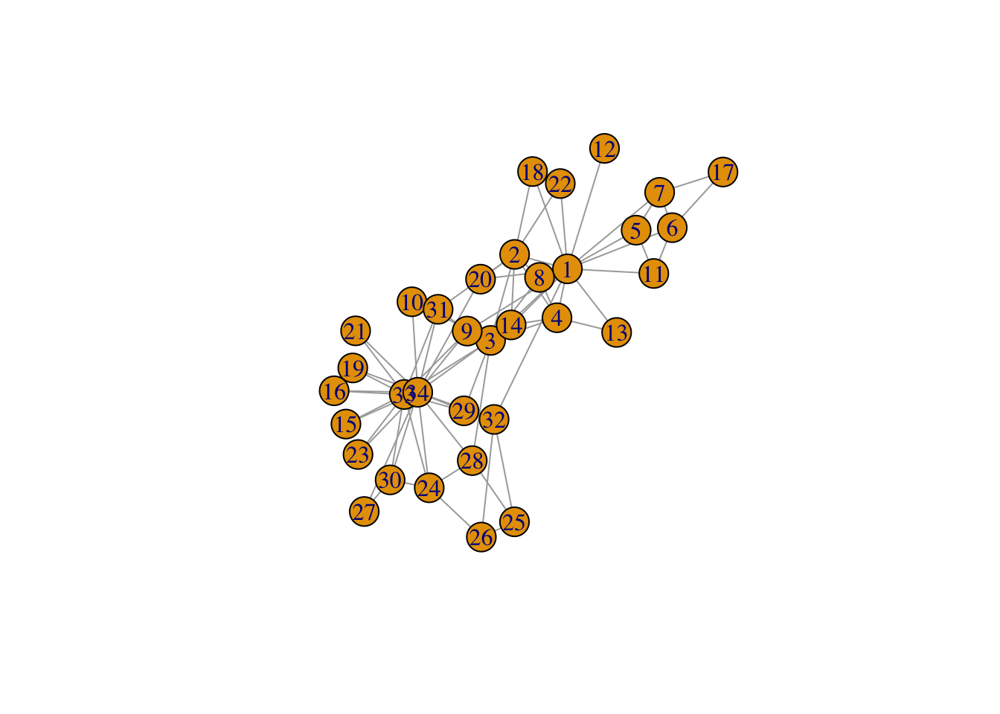

Journal 1
Mylène Husson
library(knitr)
library(tidyverse)
library(scholar)
library(openalexR)
library(rvest)
library(jsonlite)
library(httr)
library(rvest)
library(reshape2)
library(xml2)
library(openxlsx)
library(polite)
library(igraph)
library(sna)
library(genderizeR)
library(RSelenium)
library(netstat)
library(pingr)
#load the functions you need from the packages
fpackage.check <- function(packages) {
lapply(packages, FUN = function(x) {
if (!require(x, character.only = TRUE)) {
install.packages(x, dependencies = TRUE)
library(x, character.only = TRUE)
}
})
}
fsave <- function(x, file = NULL, location = "./data/processed/") {
ifelse(!dir.exists("data"), dir.create("data"), FALSE)
ifelse(!dir.exists("data/processed"), dir.create("data/processed"), FALSE)
if (is.null(file))
file = deparse(substitute(x))
datename <- substr(gsub("[:-]", "", Sys.time()), 1, 8)
totalname <- paste(location, datename, file, ".rda", sep = "")
save(x, file = totalname) #need to fix if file is reloaded as input name, not as x.
}
fload <- function(filename) {
load(filename)
get(ls()[ls() != "filename"])
}
fshowdf <- function(x, ...) {
knitr::kable(x, digits = 2, "html", ...) %>%
kableExtra::kable_styling(bootstrap_options = c("striped", "hover")) %>%
kableExtra::scroll_box(width = "100%", height = "300px")
}Last compiled on September, 2025
1 Week 4
1.1 Workshop
Today we are going to look at network visualisation. It is important you look at the data
1.1.1 Zachary’s karate club
require(igraph)
# Visualise Zachary's network
g <- make_graph("Zachary")
plot(g)
# you see differences between ego's in centralities, it's a complete network, undirected and unweighted ties.
# Perhaps something like friendship or something.
gmat <- as_adjacency_matrix(g, type = "both", sparse = FALSE)
#gmat
# Descriptives
# number of nodes: vcount(g)
# number of edges: ecount(g)
# the number of degrees: heavliy skewed
igraph::degree(g)## [1] 16 9 10 6 3 4 4 4 5 2 3 1 2 5 2 2 2 2 2 3 2 2 2 5 3 3 2 4 3 4 4 6
## [33] 12 17# transitivity
# be aware that directed graphs are considered as undirected. but g is undirected.
igraph::transitivity(g, type = c("localundirected"), isolates = c("NaN", "zero"))## [1] 0.1500000 0.3333333 0.2444444 0.6666667 0.6666667 0.5000000 0.5000000 1.0000000 0.5000000
## [10] 0.0000000 0.6666667 NaN 1.0000000 0.6000000 1.0000000 1.0000000 1.0000000 1.0000000
## [19] 1.0000000 0.3333333 1.0000000 1.0000000 1.0000000 0.4000000 0.3333333 0.3333333 1.0000000
## [28] 0.1666667 0.3333333 0.6666667 0.5000000 0.2000000 0.1969697 0.1102941# betweenness: 1 and 34 very high
igraph::betweenness(g, directed = FALSE)## [1] 231.0714286 28.4785714 75.8507937 6.2880952 0.3333333 15.8333333 15.8333333 0.0000000
## [9] 29.5293651 0.4476190 0.3333333 0.0000000 0.0000000 24.2158730 0.0000000 0.0000000
## [17] 0.0000000 0.0000000 0.0000000 17.1468254 0.0000000 0.0000000 0.0000000 9.3000000
## [25] 1.1666667 2.0277778 0.0000000 11.7920635 0.9476190 1.5428571 7.6095238 73.0095238
## [33] 76.6904762 160.5515873# dyad census: igraph::dyad.census(g)
# igraph::triad.census(g)
# I will use sna because it shows the names of the triads as well.
igraph::transitivity(g, type = "global")## [1] 0.2556818#sna::gtrans(gmat)
triad_g <- data.frame(sna::triad.census(gmat))
# for transitivity on network level: divide number of transitive triads by all possible transitive triads
# X300 is the variable of transative triads, and the X201 is the one in which one person is linked with two persons, who are not linked: so it's a possible transitive triad.
# therefore, X201 + X300 are all possible transititve triads.
transitivity_g <- (3 * triad_g$X300)/(triad_g$X201 + 3 * triad_g$X300)
transitivity_g## [1] 0.25568181.2
1.2.1 Ashwin Presentation
You can look at network properties (descriptives, graph), Ashwin looks at how we can use networks to explain certain phenomena.
RQ: How are social and intellectual relations structured and given shape within research universities?
Not only about social relationships, but also intellectual thinking. Do shared interests lead to collaborations, or do collaborations lead to similar interests.
- structure: collaboration leads to similar interests
- culture: scientists with similar interests find each other
- homophily: similar backgrounds lead to similar interest and collaboration
- propinquity: physical proximity leads to similar research interest and collaborationIf you have a huge network of ties, you can see if there are people who do not work together with people you are observing, but that does not mean they don’t collaborate at all.
1.3
1.3.1 Continuing with Zachary’s karate club
# make sizes proportional to betweenness score
V(g)$size = igraph::betweenness(g, normalized = TRUE, directed = FALSE)* 60 + 10 #after some trial and error
plot(g, mode = "undirected")
# the + 10 is added because some nodes have a 0 on betweenness and dissapear in the graph without +10
# the * 60 makes the differences bigger
# now: we want no overlap
set.seed(2345)
l <- layout_with_mds(g) #https://igraph.org/r/doc/layout_with_mds.html
plot(g, layout = l)
# now you see three clusters: around 33/34, around 1 and around 3, and the cluser around 3 you didn't see before. And that the two biggest clusters are not linked directly.
# you can then say that specific ones should be further apart:
# l #let us take a look at the coordinates
l[1, 1] <- 4
l[34, 1] <- -3.5
plot(g, layout = l)
# 1 and 34 are most connected, perhaps they are the owners/masters from the karate club
# and maybe they are having an argument and are therefore not connectedLooking at Jochem’s paper about twitter and the people in parliament. You see pollarisation: people mostly interact with people in their own party (clusters)
1.4 Homework
1.5 Friday September 19th
1.5.1 Figuring out assigning gender:
# from the tutorial
df <- fload(file = "./data/20230627df_names.rda")
firstname <- df |>
distinct(firstname) |> #only unique
select(firstname) |> #only this variable
filter(firstname != "") |> #remove empty
pull(firstname) #save as chr
test <- genderizeAPI(firstname[1])
#test$response
length(firstname)## [1] 595df_genderizer <- data.frame(matrix(ncol = 4, nrow = length(firstname)))
colnames(df_genderizer) <- c("count", "name", "gender", "probability")
#for (i in 1:length(firstname)) {
# Sys.sleep(0.1)
# df_genderizer[i, ] <- genderizeAPI(firstname[i])$response
#}
#colnames(df_genderizer) <- c("count", "name", "gender", "probability")
#df_genderizer$name <- firstname #so we know which names are not found.
#df_genderizer
# now we have a probability score, but you can also dummify it
#df_genderizer <- df_genderizer[df_genderizer$probability > 0.9, ]
#df_genderizer <- subset(df_genderizer, select = c("name", "gender"))
#fshowdf(df_genderizer)
#View(df_genderizer)
#df |>
# left_join(df_genderizer, by = c(firstname = "name")) -> df_gender
#fshowdf(df_gender)
#fsave(df_gender)1.5.2 Figured out assigning gender
# Rvest table object inspecteren en die geven aan het
name = "Erik"
# Build URL robustly
base_url <- "https://nvb.meertens.knaw.nl/naam/is"
name_url <- paste0(base_url, "/", name)
table <- read_html(name_url) |>
html_element("table") |>
html_table()
# Replace "--" with "0" everywhere
table[table == "--"] <- "0"
# Now you can safely convert to numeric
val_male <- as.numeric(table[2, 3])
val_female <- as.numeric(table[6, 3])
# Compare and assign gender
gender <- if (val_male > val_female) {
"male"
} else if (val_female >= val_male) {
"female"
} else {
NA
}
gender## [1] "male"1.5.3 Making a function genderizer
my_genderizer <- function(name) {
name <- gsub("^/+|/+$", "", name)
# Build URL
base_url <- "https://nvb.meertens.knaw.nl/naam/is"
name_url <- paste0(base_url, "/", name)
# Try reading table
table <- tryCatch(
read_html(name_url) |>
html_element("table") |>
html_table(),
error = function(e) NULL
)
if (is.null(table)) return(NA) # return NA if no table found
# Replace "--" with "0"
table[table == "--"] <- "0"
# Convert to numeric
val_male <- suppressWarnings(as.numeric(table[2, 3]))
val_female <- suppressWarnings(as.numeric(table[6, 3]))
# Decide gender
if (is.na(val_male) & is.na(val_female)) {
gender <- NA
} else if (val_male > val_female) {
gender <- "male"
} else if (val_female > val_male) {
gender <- "female"
} else {
gender <- NA
}
return(gender)
}
soc_pol <- readxl::read_excel("/Users/mylenehusson/Desktop/SocialNetworks/labjournal_mylene/data/20240419Scholarid_soc_pol.xlsx")
soc_pol_small <- soc_pol[1:20, ]
soc_pol_small <- soc_pol_small |>
mutate(firstname = word(Naam, 1))
for (i in seq_len(nrow(soc_pol_small))) {
name <- soc_pol_small$firstname[i]
gender <- my_genderizer(name)
soc_pol_small$gender[i] <- gender
}## Warning: Unknown or uninitialised column: `gender`.#View(soc_pol_small)1.5.4 The nomination Network
# load in the data
scholars <- fload("./data/processed/scholars_20240924.rda")
# select scholars
# (sociology, RU)
demographics <- do.call(rbind.data.frame, scholars$demographics)
demographics <- demographics %>%
mutate(Universiteit1.22 = replace(Universiteit1.22, is.na(Universiteit1.22), ""), Universiteit2.22 = replace(Universiteit2.22,
is.na(Universiteit2.22), ""), Universiteit1.24 = replace(Universiteit1.24, is.na(Universiteit1.24),
""), Universiteit2.24 = replace(Universiteit2.24, is.na(Universiteit2.24), ""), discipline.22 = replace(discipline.22,
is.na(discipline.22), ""), discipline.24 = replace(discipline.24, is.na(discipline.24), ""))
sample <- which((demographics$Universiteit1.22 == "RU" | demographics$Universiteit2.22 == "RU" | demographics$Universiteit1.24 ==
"RU" | demographics$Universiteit2.24 == "RU") & (demographics$discipline.22 == "sociology" | demographics$discipline.24 ==
"sociology"))
demographics_soc <- demographics[sample, ]
scholars_sel <- lapply(scholars, "[", sample)
# construct the empty adjacency matrix
ids <- demographics_soc$au_id
wave2 <- wave1 <- matrix(0, nrow = length(ids), ncol = length(ids), dimnames = list(ids, ids))
# filter works
works <- scholars_sel$work
works_id <- unlist(lapply(works, function(l) l$id))
works_author <- unlist(lapply(works, function(l) l$author), recursive = FALSE)
works_year <- unlist(lapply(works, function(l) l$publication_year), recursive = FALSE)
df_works <- tibble(works_id, works_author, works_year)
dups <- which(duplicated(works_id))
df_works <- df_works[-dups, ]
df_works_w2 <- df_works[df_works$works_year > 2019, ]
# undirected
# undirected
for (i in 1:nrow(df_works_w2)) {
egos <- df_works_w2$works_author[i][[1]]$au_id
if (sum(ids %in% egos) > 0) {
wave2[which(ids %in% egos), which(ids %in% egos)] <- 1
}
}Now one function to rule them all:
fcolnet <- function(data = scholars, university = "RU", discipline = "sociology", waves = list(c(2015,
2018), c(2019, 2023)), type = c("first")) {
# step 1
demographics <- do.call(rbind.data.frame, data$demographics)
demographics <- demographics %>%
mutate(Universiteit1.22 = replace(Universiteit1.22, is.na(Universiteit1.22), ""), Universiteit2.22 = replace(Universiteit2.22,
is.na(Universiteit2.22), ""), Universiteit1.24 = replace(Universiteit1.24, is.na(Universiteit1.24),
""), Universiteit2.24 = replace(Universiteit2.24, is.na(Universiteit2.24), ""), discipline.22 = replace(discipline.22,
is.na(discipline.22), ""), discipline.24 = replace(discipline.24, is.na(discipline.24), ""))
sample <- which((demographics$Universiteit1.22 %in% university | demographics$Universiteit2.22 %in%
university | demographics$Universiteit1.24 %in% university | demographics$Universiteit2.24 %in%
university) & (demographics$discipline.22 %in% discipline | demographics$discipline.24 %in% discipline))
demographics_soc <- demographics[sample, ]
scholars_sel <- lapply(scholars, "[", sample)
# step 2
ids <- demographics_soc$au_id
nwaves <- length(waves)
nets <- array(0, dim = c(nwaves, length(ids), length(ids)), dimnames = list(wave = 1:nwaves, ids,
ids))
dimnames(nets)
# step 3
df_works <- tibble(works_id = unlist(lapply(scholars_sel$work, function(l) l$id)), works_author = unlist(lapply(scholars_sel$work,
function(l) l$author), recursive = FALSE), works_year = unlist(lapply(scholars_sel$work, function(l) l$publication_year),
recursive = FALSE))
df_works <- df_works[!duplicated(df_works), ]
# step 4
if (type == "first") {
for (j in 1:nwaves) {
df_works_w <- df_works[df_works$works_year >= waves[[j]][1] & df_works$works_year <= waves[[j]][2],
]
for (i in 1:nrow(df_works_w)) {
ego <- df_works_w$works_author[i][[1]]$au_id[1]
alters <- df_works_w$works_author[i][[1]]$au_id[-1]
if (sum(ids %in% ego) > 0 & sum(ids %in% alters) > 0) {
nets[j, which(ids %in% ego), which(ids %in% alters)] <- 1
}
}
}
}
if (type == "last") {
for (j in 1:nwaves) {
df_works_w <- df_works[df_works$works_year >= waves[[j]][1] & df_works$works_year <= waves[[j]][2],
]
for (i in 1:nrow(df_works_w)) {
ego <- rev(df_works_w$works_author[i][[1]]$au_id)[1]
alters <- rev(df_works_w$works_author[i][[1]]$au_id)[-1]
if (sum(ids %in% ego) > 0 & sum(ids %in% alters) > 0) {
nets[j, which(ids %in% ego), which(ids %in% alters)] <- 1
}
}
}
}
if (type == "all") {
for (j in 1:nwaves) {
df_works_w <- df_works[df_works$works_year >= waves[[j]][1] & df_works$works_year <= waves[[j]][2],
]
for (i in 1:nrow(df_works_w)) {
egos <- df_works_w$works_author[i][[1]]$au_id
if (sum(ids %in% egos) > 0) {
nets[j, which(ids %in% egos), which(ids %in% egos)] <- 1
}
}
}
}
output <- list()
output$data <- scholars_sel
output$nets <- nets
return(output)
}1.5.5 Assigning Gender to demographics
df_scholars <- do.call(rbind, scholars$demographics)
#View(df_scholars)
df_scholars2 <- df_scholars |>
mutate(firstname = word(Naam, 1)) # extract first names
df_scholars2$gender <- NA_character_ # initialize gender column
for (i in seq_len(nrow(df_scholars2))) {
name <- df_scholars2$firstname[i]
gender <- my_genderizer(name)
df_scholars2$gender[i] <- gender
Sys.sleep(0.1) # pause between requests
}
#View(df_scholars2)